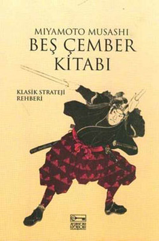
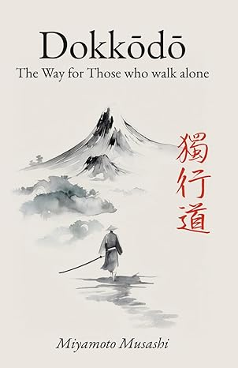

|  |
Beş Çember Kitabı (Go Rin No Sho)Musashi'nin en bilinen eseri. Toprak, Su, Ateş, Rüzgar ve Boşluk olmak üzere 5 bölümden oluşur. Savaş stratejilerini anlatır. Satın Almak İçin: DR |
|  |
Dokkodo (Yalnızlığın Yolu)Ölümünden kısa süre önce kaleme aldığı 21 maddelik yaşam rehberi. Disiplin ve zihin yapısını anlatır. Satın Almak İçin: Amazon |